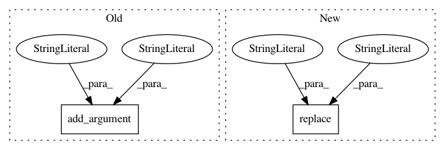

d36da2e5144a40072b11e39f9da6725cc3f4441e,flow/visualize/time_space_diagram.py,,,#,430
Before Change
help="The minimum speed in the color range.")
parser.add_argument("--start", type=float, default=0,
help="initial time (in sec) in the plot.")
parser.add_argument("--stop", type=float, default=float("inf"),
help="final time (in sec) in the plot.")
args = parser.parse_args()
// flow_params is imported as a dictionary
After Change
[-0.1, -0.1], linewidth=3, color="white") //
//////////////////////////////////////////////////////////////////////////////////////////////////////////////////////////////////////////////////////
outfile = args.trajectory_path.replace("csv", "png")
plt.savefig(outfile)
In pattern: SUPERPATTERN
Frequency: 3
Non-data size: 2
Instances
Project Name: flow-project/flow
Commit Name: d36da2e5144a40072b11e39f9da6725cc3f4441e
Time: 2020-07-08
Author: jonny5@berkeley.edu
File Name: flow/visualize/time_space_diagram.py
Class Name:
Method Name:
Project Name: konstantint/PassportEye
Commit Name: 929c186c4dfa80a1ac975b5f2b95002ca12889d0
Time: 2020-11-28
Author: kt@ut.ee
File Name: passporteye/mrz/scripts.py
Class Name:
Method Name: mrz
Project Name: MycroftAI/mycroft-precise
Commit Name: d2a5469bf3fe95490f19f6ccfdc9e64a21a6fba8
Time: 2018-02-15
Author: matthew3311999@gmail.com
File Name: precise/convert.py
Class Name:
Method Name: